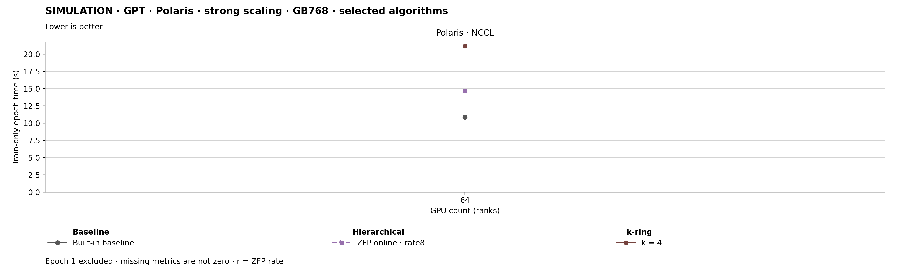

The figure uses lines. Methods use colors, line styles and markers. The metric is Train-only epoch time (s). Polaris · NCCL, GPU count (ranks) 64: Built-in baseline has the lowest plotted value, 10.900. Epoch 1 is excluded. Values are medians; when repeated runs are available the selected repeat policy is median. These are not confidence intervals across repeated jobs. Missing or unrecorded metrics are omitted, not set to zero.
| Panel | GPU count (ranks) | Method | Value | Runs |
|---|---|---|---|---|
| Polaris · NCCL | 64 | none | 10.9 | 1 |
| Polaris · NCCL | 64 | hierarchical_zfp_online_coll:8 | 14.67 | 1 |
| Polaris · NCCL | 64 | kring_k4 | 21.21 | 1 |